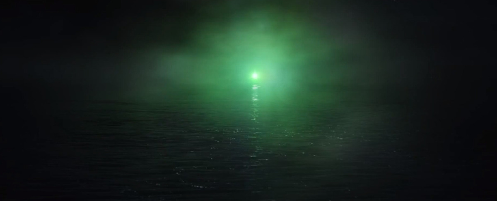

land of dreams and opportunity, a beacon of light to those for which little hope exists
A brief explanation:
Hard work, risk taking, and sacrifice will result in the sucess someone desires and the upward moblilty is possible for everyone.
The green light in brief represents the achieving of the American Dream. Gatsby is looking at the Green Light as his goal of getting Dasiy
In short, yes, at least in the author eyes. The moral value has been corruped and people would do anything to achieve their desire for thier American Dream. The noble goal is aboundaned for the unrestirsted desire for money